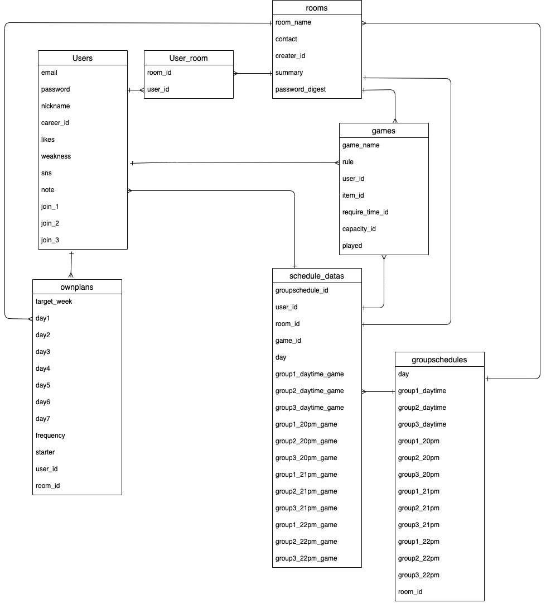

BG_CAFE (Board Game CAFE)
アプリケーション概要
ルームを作成し、集まったグループで予定を作成するアプリケーション。特にボードゲームで遊ぶユーザーに特化したものです。
URL
http://18.178.195.121
テスト用アカウント
テスト用アカウント - email 1@test - password 111111
テストルーム - password qqq111
利用方法
- 右上の新規登録からユーザー登録を行う。
- 新規ルームを作成、または既存のルームを選択する。
- ルームに参加し、各ルームに参加が可能。（自分で作成した場合は自動でその部屋に参加）
- 他者にお勧めしたいゲームを登録、またはプロフィールの編集ができる。
- 予定の応募をし、各ユーザーがそこに予定登録が可能。
- 各ユーザーの予定から、日毎に遊べるユーザーの組み合わせや、遊んだことのないゲームを表示する。
アプリケーションを作成した背景
オンラインで仲間内で遊ぶ人たちが、簡単に予定を組むことができる。また、ユーザーが多くなれば、新しく遊ぶ仲間を探す場にもなることを期待しています。
作成の背景は、実際に友人がオンラインでボードゲームを遊ぶ際に、仲間内で予定を立てるのに時間がかかり、また多忙のため体調を崩してしまったことがあり、
それらをクリックのみで簡潔に行えるようにしたいと考えました。 ##
実装した機能
実装予定の機能
- ゲーム登録欄に「ふぁぼ機能」を追加
- ルームの見た目をカスタマイズできる機能を追加
データベース設計

ER図
画面遷移図
 画面遷移図
画面遷移図
開発環境
- 使用言語: HTML, CSS, Ruby, JavaScript
- フレームワーク: Ruby on Rails
ローカルでの動作方法
- GitHubからリポジトリをクローンします。 ```bash git clone
https://github.com/Toshiki-Ichi/bgcafe.git
- クローンしたディレクトリに移動します。 ```bash cd bgcafe
- 必要なGemをインストールします ```bash bundle install
- データベースを作成します
```bash rails db:create
- マイグレーションを実行します ```bash rails db:migrate
- アプリケーションを起動します ```bash rails server ## 使用技術
- カラムの名前に法則性を持たせ、繰り返し処理が容易になるよう工夫しました。
開発方法
大まかな挙動を記述後、ChatGPTを用いてリファクタリングを行いました。
タスク管理
機能実装に必要な作業を細分化し、毎日のToDoを作成して進行しました。
改善点
現在の見た目が簡素なため、CSSでの配色変更や画像挿入などを検討しています。
制作時間
約15日